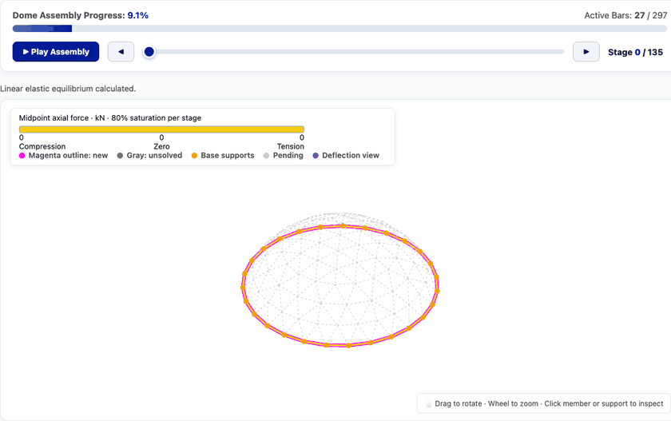
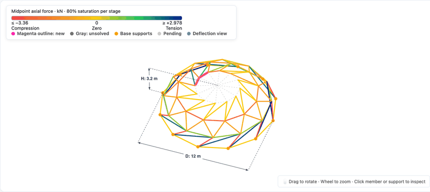
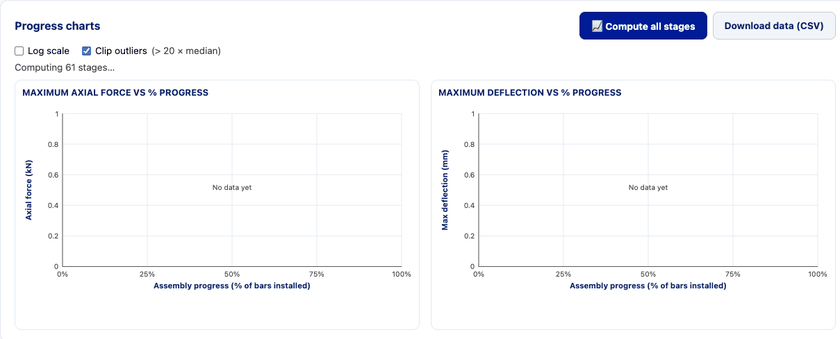
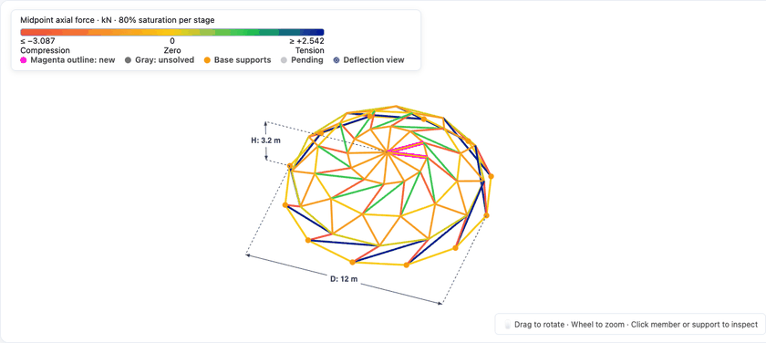

DomeStage
Simulación Estructural y Verificación Normativa en Tiempo Real para el Montaje de Domos de Acero
Un domo cerrado es indestructible. Pero durante el montaje es un voladizo en el espacio. DomeStage previene el colapso y garantiza la seguridad antes de que la cuadrilla instale la primera barra.
¿Por Qué el Montaje es la Etapa Más Crítica de un Domo?
Los programas tradicionales diseñan el domo en su geometría final. Pero el colapso ocurre en obra, cuando la estructura está incompleta y no existe el efecto membrana cerrado.
Mecanismos Cinemáticos
Al montar 2 barras en voladizo, si los nodos no cuentan con triangulación suficiente se genera un mecanismo instantáneo (rigidez cero) y deformaciones fuera de control.
Empuje y Pandeo en Voladizo
Bajo peso propio, los arcos incompletos sufren momentos de flexión biaxial no previstos en el diseño final, sobrecargando las barras de los primeros anillos.
Software CAD vs Realidad
Los visores CAD 3D son 'ciegos': solo muestran geometría sin física. Y el FEA tradicional toma horas o días para recalcular manualmente 60 etapas de montaje.
DomeStage: Montaje Progresivo en Tiempo Real
Simulación interactiva a 60 FPS con cálculo matricial instantáneo. El ingeniero recorre barra por barra la secuencia de montaje con total fluidez.
Resaltado de Nuevas Barras (Magenta)
Identificación visual instantánea de los 2 elementos recién instalados por la cuadrilla en cada etapa.
Gradiente de Esfuerzos Axiales
Código de color continuo: Azul para tracción, Rojo para compresión, Amarillo para esfuerzo neutro.
Importación Directa CAD / DXF
Carga modelos reales de Geometrica directamente desde capas DXF o modelos paramétricos nativos.

Deformada Nodal y Reacciones en Cimentación
No es un render hueco: el solver resuelve la rigidez elástica tridimensional (6 GDL por nodo) y calcula flechas milimétricas y empujes en los apoyos.
Multiplicador de Deflexión (10× a 100×)
Permite apreciar a simple vista el pandeo y la curvatura que experimenta la cúpula durante su crecimiento.
Vectores de Reacción 3D en Apoyos
Desglose en coordenadas globales (Rx, Ry, Rz) y cilíndricas: empuje radial hacia afuera y tangencial.
Condiciones de Borde Configurables
Simulación con apoyos articulados (3 GDL) o empotrados (6 GDL), y formulación con o sin rigidez a flexión.

Curvas de Evolución y Detección de Inestabilidades
DomeStage identifica con precisión matemática quirúrgica en qué etapa exacta la estructura sufre los mayores esfuerzos y deflexiones.
Curvas de Esfuerzos y Flechas en SVG
Envolvente de fuerza axial máxima (|F| máx, tracción, compresión) y deflexión vertical vs % de avance.
Detección Automática de Mecanismos
El solver detecta singularidades de rigidez y marca triángulos rojos alertando inestabilidad cinemática.
Sincronización Bidireccional
El cursor verde punteado se mueve en tiempo real conforme el usuario avanza el montaje en el visor 3D.

Verificación AISC 360-22 y Reporte Ejecutivo
De un modelo 3D a una memoria de cálculo oficial lista para firma de ingeniería y entrega a cliente.
ANSI/AISC 360-22 LRFD Incorporado
Combinación 1.4D, espesor de diseño 0.93t, esbeltez KL/r, Capítulos D, E, F8 e interacción H1-1a/b.
Inspección de Miembro en 3D
Barras en verde (U ≤ 1.0) y rojo (U > 1.0). Clic en barra para ver capacidades nominales y ecuación gobernante.
Reporte Ejecutivo en Excel (.xlsx)
Exportación bilingüe (EN/ES) con tablas resumen de barras críticas, apoyos y envolventes por etapa.

Valor Estratégico y Retorno de Inversión
DomeStage transforma la seguridad, la productividad técnica y la confianza de los clientes de Geometrica en todo el mundo.
Seguridad Cero Accidentes
Certeza matemática de que cada barra instalada en obra tiene rigidez positiva y no provocará un mecanismo de colapso inesperado.
De Días a Segundos
Ahorro masivo de horas hombre de ingeniería estructural al automatizar el cálculo iterativo de 60+ etapas con un solo clic.
100% Web · Cero Instalación
Corre en la laptop del ingeniero en campo, en la tablet del supervisor de grúa o en la sala de juntas corporativa.
DomeStage
"No asumimos que la estructura es estable: lo demostramos en cada barra instalada."
El estándar digital para el montaje seguro y eficiente de domos geométricos de acero.